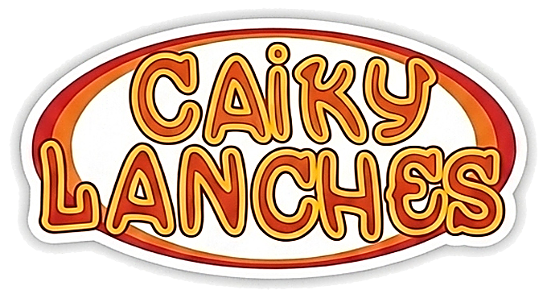

Presença e destaque
A versão que já estava publicada: fundo escuro, botões grandes e vitrine horizontal.
- Cardápio e Instagram com acesso direto
- Espaços de WhatsApp, Wi-Fi e Google
- Modo mesa/bio e troca de tema

PRÉVIAS PARA COMPARAÇÃO
Caiky Lanches · escolha a direção do hub
A versão que já estava publicada: fundo escuro, botões grandes e vitrine horizontal.
A proposta refinada, com tons claros, opções agrupadas e experiências para quem está na mesa ou chega pela bio.